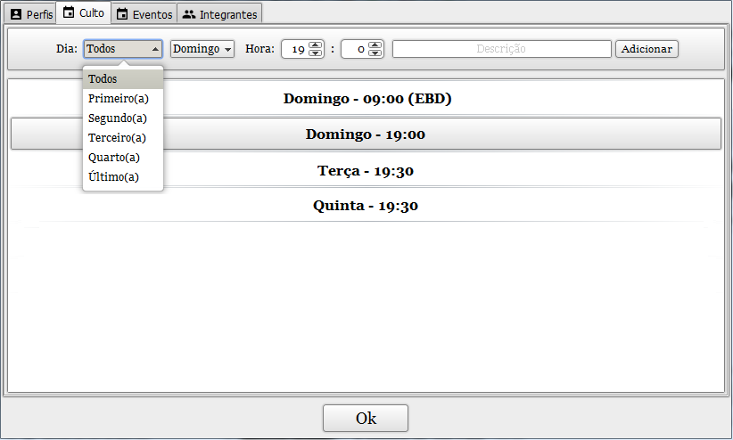

Cadastre os cultos regulares no sistema.
Organize a Escala dos integrantes da equipe e a Lista de Reprodução para os cultos cadastrados.
Ao cadastrar um culto, será calculado automaticamente todas as datas dele.
Cada culto terá sua própria lista de reprodução e escala.
Após criado, não é possível editar o dia do culto.
Caso seja necessário, você pode utilizar a opção "Desativar" para remover o culto das principais listas, porém sem perder os dados referentes a ele.
